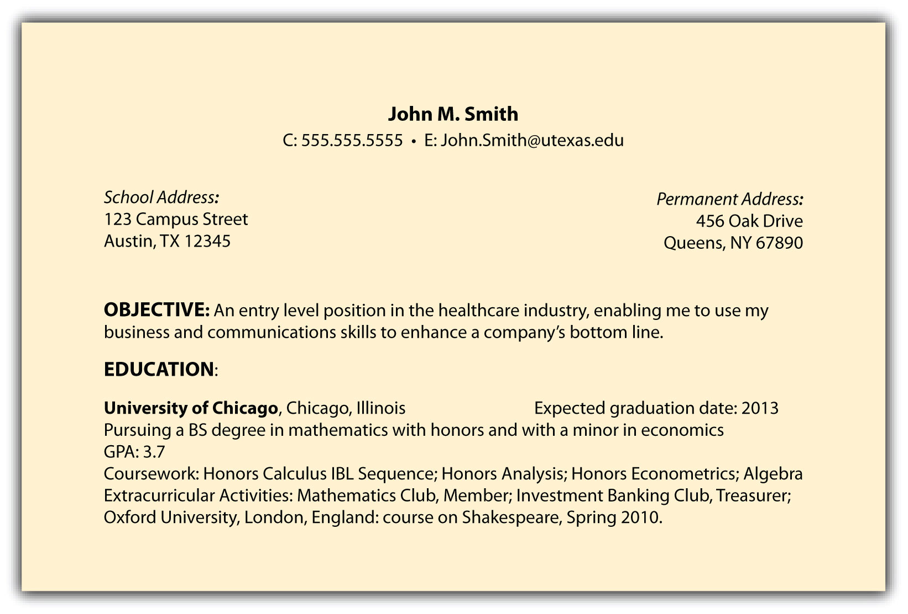

Figure 4.1 The Six-Step Job Search Process—Step 2

Market Yourself First with Your Résumé
At this point in your search, you have completed step 1 with a specific industry, function, and geography in mind.
Step 2 (creating a compelling marketing campaign) consists of four distinct tools that can help construct a strong, effective, and successful job search:
This chapter will focus only on your résumé. Chapter 5 "Step 2 (Continued): Create a Compelling Marketing Campaign, Part II: Cover Letter, Pitch, and Online Profile" will complete this step, and we will then focus on the remainder of your marketing campaign: your cover letter, your pitch, and your online profile.
Marketing Focus. Your résuméA brief written account of personal, educational, and professional qualifications and experience, usually prepared by an applicant for a job. is a marketing document that sells your candidacy. It provides an outline of your educational background, your work experience, and the key skills you have acquired. Your résumé should be marketed in a format that is pleasing to read, efficient in its use of the English language, and so concise that it fits on one page. Once you have approximately ten years of experience, it is more acceptable to have a two-page résumé, but until then, you should adhere to a one-page document. Recruiters can frown on the audacityRefers to a bold move or presumption. of a college student with a two-page résumé. Whether you are not sure you can fill a one-page résumé, or whether you think it’s not possible to fit your information to only one page, this chapter will help you get to your goal: an exceptional, one-page résumé.
Quality, Clarity, and Accuracy. Your résumé is the most critical component, or cornerstone, of your marketing campaign and it must meet two important criteria:
Your résumé must be written in a clear and concise manner so the reader can quickly grasp what you offer as a candidate. Most seasoned recruiters scan a résumé in about seven to ten seconds, but do not let that short review time throw you. Recruiters have an eye for the key things to look for in a résumé, so a lot of care should be put into its construction. That construction should highlight the following features:
Proofread your résumé several times, use spell check, and ask someone who is exceptional at proofreading to review it. Always assume that an error lurks somewhere in your résumé and review it and review it and review it until you find that error! Résumés often have the following common errors:
How to Craft the Perfect Résumé. This is a trick title because there is no perfect résumé. You could always choose to have a particular bullet written in ways that are grammatically correct, are results oriented, and use action verbs, but writing a résumé is not a perfect science. You could show your résumé to five different recruiters and you might get five different opinions. There is no need to worry. The important thing is that it is well-written and highlights your accomplishments (no matter how big or how not so big). It’s important that the format be consistent and that you get an opinion from a professional, whether it is someone from career services, a professor, or a person who is currently working in the field in which you are most interested.
On-Campus Recruiting. If you are participating in on-campus recruitingManaged by a college’s career services office. Specific companies will come on campus to interview candidates. Second rounds and final rounds will follow either on campus or at the employer’s offices. (when a company comes onto your campus to recruit), three interview scenarios are possible: open, closed, or a mixed schedule. The school dictates the type of schedule, and it’s important to know in which type you are participating:
Whether you drop your résumé for an open schedule or you are selected to participate in a closed schedule, the recruiting cycle is fast paced and résumés can be easily missed due to no fault of the job seeker and résumé writer. Sometimes recruiters review hundreds of résumés to find the ten or twelve they will pursue, and sometimes résumés can be missed because of something as simple as pages sticking to one another.
Should your résumé be one of the many that isn’t selected, you can write to the recruiter, using your cover letter to make a strong case for why you should be considered. In some cases, this may work to get you an interview. In other cases, it will not. You can easily be passed over for no reason.
The recruiting process is not perfect, so it’s recommended that you apply for as many positions as possible. Never rely solely on the submission of one résumé (Chapter 5 "Step 2 (Continued): Create a Compelling Marketing Campaign, Part II: Cover Letter, Pitch, and Online Profile" will give you additional strategies to get your foot in the door). Instead, when on-campus recruiting takes place, apply for all positions that fit your strengths and interests.
Off-Campus Recruiting. Don’t limit your search to only on-campus opportunities because off-campus opportunities can also be fruitful. Conducting both an on-campus and off-campus job search only increases the number of opportunities you can consider. You will want to pursue off-campus opportunities for three reasons:
The main difference between on-campus and off-campus recruitingNot managed by a college’s career services office. Instead, a candidate manages all company interaction and follow-up. Advice can still be sought from career services, however, it’s the student’s responsibility to manage the overall process. is that in off-campus recruiting, you manage the entire process. You are responsible for getting your résumé into the hands of the company recruiters or hiring managers. You schedule the interview and follow up on your own. An off-campus job search demands that you are organized and proactive enough to keep things moving.
Make an Exceptional First Impression. Your résumé will probably be the first impression a potential employer has of you and your qualifications, so it must hold their attention long enough to propel your job search forward. Use this opportunity to impress and to intrigue them enough to want to interview you. This chapter will outline multiple strategies you can employ to be seriously considered for numerous job opportunities.
A well-written résumé can do seven specific things for you and your job search:

Your résumé can be uploaded to global job boardsOriginally used to refer to a physical board or case, often located in an employment center or agency. People looking for work might check the job board every few days to see hand-posted offers of work. This term now refers to an online job board site, where individuals can apply for positions. Two of the largest job boards are Monster and CareerBuilder, but there are hundreds of niche job board sites that focus on teaching positions, technology positions, sales positions, and so on. like MonsterOne of the largest job board sites. (CareerBuilder is a competitor.), CareerBuilderOne of the largest job board sites. (Monster is a competitor.), and others in a few minutes. It can be sent to a company’s online database with a push of a button. It can then be shared with dozens of recruiters and hiring managers without you even knowing about it. In fact, it’s a lot easier to get your résumé in front of a recruiter than it is to have a physical presence in their office; therefore, make certain it’s a well-written, well-positioned document that makes an exceptional first impression.
The best résumés quantify results and accomplishments clearly and easily. Here are some examples:
Quantifying your accomplishments gives your résumé readers the specific information they need to know about your abilities and to be intrigued by what you can do for them.
Focus on the results of your actions. Being results oriented helps résumé readers understand your abilities. What exactly do you do, or what have you done in the past? Your résumé should answer this question very quickly. For example, if you have been responsible for opening and closing a retail store on a daily basis and for managing the register that took in approximately $5,000 worth of merchandise a day, state that clearly and concisely. If you have written three to four sports articles for your school paper every month for the past three years, include that as well. The more you quantify your accomplishments, the more your abilities will be understood.
You don’t have to be an English major to make sure that your résumé is well-written. If your school has a career services department that offers résumé workshops, be sure to participate in them. Ask an older sibling who is in the workplace to review your résumé before it goes into cyberspace or to a future employer. Other options include asking a teacher, professor, or perhaps someone with whom you worked with or for in the past to review your résumé. Whatever the case, it is your responsibility to have a well-written résumé. You can pay for résumé-writing services, but finding someone who knows the basics of solid résumé writing may be all you need, along with this textbook. Remember that if it has one misspelled word, your résumé could easily be dismissed, along with your candidacy. It’s critical that your résumé be accurate and well written.
Clearly listing your accomplishments and quantifying those accomplishments can create talking points for your future interviews. For example, perhaps your bullet point is the following:
Many individuals have to think about the results of their work. Including this detailed information in your résumé actually allows you to easily talk about the value you’ve brought to previous employers. During an interview, with the preceding example in mind, you can easily talk about how you use technology to improve processes. You can discuss the team environment of the library staff and how you are all working toward decreasing the number of lost books. It shows that you have positively affected the bottom line by helping libraries hold onto books versus losing them, which results in unnecessary fees to library users.
Whenever including bullet points about past work, always tie your efforts to the bottom line. Earlier examples in this chapter included the following accomplishments:
Information relating to a company’s bottom line is exactly what employers want to read. Highlighting results like these increases your chances of having your résumé noticed.
Unlike financial investments, past performance is an indicator of future success, so include and quantify your past performance, and future employers will be inclined to believe you can do the same for them. They will believe it, but you have to continue supporting that belief with your exceptional networking and interviewing skills (Chapter 7 "Step 4: Network Effectively" and Chapter 8 "Step 4 (Continued): Master the Interview"). Remember, however, that your résumé is introductory in nature. You want to get their attention and initiate their interest so your foot can inch ever closer to getting in their door.
Your résumé header should include four items:
Include your full name. If your first name is difficult to pronounce, you could include your nickname in quotation marks or parentheses (e.g., Xioang “Angie” Kim or Massimo “Mass” Rapini). Names are typically bolded and centered on the page, but aligning your name to the right or left is also appropriate.
You can use your school address or your permanent home address, or both. Most recruiters prefer both because, at times, they may need to send information to both addresses at different times of the year. Clarity is always a very good thing.
Have a professional e-mail address because employers frown upon unprofessional addresses such as greeneyes2@gmail.com or runningguy62@verizon.net. It’s best to use your first name and your last name in a simple e-mail format.
Establish a professional e-mail address as soon as possible (e.g., c.thompson@gmail.com or e.autoris@verizon.net). It’s much more relevant than c.thompson@rutgers.edu, especially if you graduated six months earlier. If you continue your job search after graduation, you might not be permitted to use your school e-mail address, nor should you once you have graduated. Given this, obtaining a professional e-mail address is a good networking opportunity to contact the individuals with whom you’ve been in touch regarding your job search. Inform those individuals and any relevant recruiters that you’ve updated your contact information.
Include only one phone number on your résumé and record a professional voice mail. Do not play music on your voice mail. and speak clearly and succinctly. It’s also recommended that you not answer your cell phone if you are in a loud area, especially when you do not recognize the number. Allow the call to go to voice mail, listen to it in a quiet place, and return the call as soon as possible. It very well could be a recruiter who would not be impressed by you shouting, “What? I can’t hear you!” A professional voice mail might sound like the following: “You’ve reached John Smith at 555.555.5555. Please leave a message and I will call you back as soon as possible.”
Include your name and repeat the phone number to help the recruiter know for certain that the proper person has been reached. Clarity is always helpful and appreciated. Lastly, be sure to check your voice mail on a regular basis, even if you are on vacation.
Recruiters appreciate clarity, and an objective can help a recruiter understand exactly what you offer or what business would best suit your background. Objectives can be very targeted and mention a specific position or can be a bit broader in describing a job function. Whatever objective you choose, it should state what you are looking for and what you have to contribute. It’s not only about you. It’s about what you can do for them. Here are some examples of effective objectives:
Your objective should not ramble past two lines because no recruiter appreciates reading a paragraph-sized objective.
Using the four preceding items, Figure 4.2 "Sample Résumé—Header and Objective" illustrates how our sample résumé looks thus far.
Figure 4.2 Sample Résumé—Header and Objective

While you are in school, or up to one year after you graduate, your education section should appear before your experience section. Once you are a working professional, these two sections can and should be flipped.
Additional items in this section include the following:
Nontraditional college students (those who have significant work experience and then decide to obtain their degree) may want to list experience before education. Since this is unusual for a new graduate, you should consult with either career services or a career coach regarding this résumé order.
Here is an example of how to list your education information.

If you attended only one college, only that college should be listed in this section.
If you transferred from another college, you should list both schools in this section. The first school you list is the current school you attend, followed by the previous school. If and when you attend graduate school, law school, and so forth, your postgraduate school would then be listed first.
High schools, no matter how prestigious, should not be included in a résumé.
If you’ve received additional training and certifications, this information does not belong in your education section. Instead, it can be listed in skills and additional information, which will be reviewed in the section of this chapter titled “Skills, Additional Information, and References.”
Using the preceding information, Figure 4.3 "Sample Résumé—Header, Objective, and Education" illustrates what our résumé looks like thus far.
Figure 4.3 Sample Résumé—Header, Objective, and Education
This section is arguably the most important of your résumé because most recruiters look for past work experience as a predictor of future work experience. The most conventional method of listing your work experience is in opposite chronological order (as with your education section). List your most recent job experience first and include the following information:
It’s important to use bullet points because they clearly and succinctly list your responsibilities and achievements. Recruiters do not enjoy or appreciate reading long paragraphs because they want to quickly skim the information.
Action verbs are helpful in this section of your résumé. You may want to consider the following words.
|
|
|
Bullets should be results oriented and used to help quantify as many things as possible. Earlier in this chapter, we referenced the following examples:
Here is how these items can be put into bullets:
Work experience comes in many forms. The majority of your experience will be paid, but it’s fine to include unpaid work experience. Perhaps you had an unpaid internship working in the marketing department of a magazine. Absolutely include that in your work experience. Perhaps you volunteered to help a teacher organize their classroom, and perhaps you interacted with students and helped them be prepared for the lesson plan. Include that in your work experience. The bottom line here is that through every experience, either paid or unpaid, you learn something. If you are washing cars, you learn the value of a production line: someone washes, someone rinses, and someone receives the payment. It’s fine to list work experiences such as babysitting, where your bullet could read as follows:
You may work in a grocery store and include the following information in your bullet:
Sample résumés are included the end of this chapter. Refer to them when drafting your résumé as some have quite a bit of related work experience, some have very little, and others have international exposure. Each sample will give you an idea of how to craft your résumé for your job search.
This section of your résumé should include, but not be limited to, the following information:
You can include additional information:
Important note: Never misrepresent any information on your résumé. If you have knowledge of another language, qualify your knowledge as fluent, intermediate, or beginner. If you don’t speak a language other than English, do not include a bullet point about language because you might not know the language capabilities of your interviewers.
Some résumé readers differ on this, but listing your interests can help develop rapport with your résumé reader and interviewer. No matter what the skill level of the interviewer, having a common interest can always begin a great conversation.
An example of information listed in this section could include the following.

One of the famous last lines of a résumé is “References furnished upon request.” This is not necessary because employers can simply ask for references when they want them. However, a proactive, impressive strategy would be to create a single-page document that includes the following information:
Do not widely distribute this information because it contains the contact information of your references, which you should treat as confidential. However, having the list prepared enables you to quickly share this information with prospective employers upon request.
Help your references help you by notifying them that they can expect a call and by highlighting the most important qualities you want them to mention.
An example of this document could include the following.
This chapter thus far has reviewed a résumé that follows a chronological format. Another format to consider is a functional résuméAs opposed to a chronological résumé, offers a different emphasis on a candidate’s accomplishments and background., which highlights the skills you’ve developed more than the individual jobs you’ve held.
Functional résumés can be different from what most recruiters will review, so it’s best to proceed with care. This includes consulting a career services office and consulting a professional résumé writer.
It’s important to note that throughout the many, many years that individuals have been drafting résumés, recruiters have expected to see a chronological résumé with certain sections: employment, education, and additional information. In most cases, it’s best to give recruiters what they expect: a chronological résumé.
With that understood, functional résumés can be used for college students and experienced candidates for the following reasons:
Here are some categories you may want to consider when drafting a functional résumé:
Figure 4.4 "Sample Functional Résumé 1" and Figure 4.5 "Sample Functional Résumé 2" are examples of how a functional résumé might look.
Figure 4.4 Sample Functional Résumé 1
Figure 4.5 Sample Functional Résumé 2

Some people interchange the word résumé with curriculum vitae (CV)Used internationally, particularly for research-oriented positions. A CV is often longer and more detailed than a résumé., which is incorrect because they are different items. A CV is mostly used internationally, particularly for research-oriented positions. A CV is often longer and more detailed than a résumé. In some cases, CVs are six to eight pages long and include published material and conference information if the person presented information to colleagues. A CV may or may not include biographical information, including marital status and nationality (this is typically the case with international students studying in the United States).
With this said, a résumé is the appropriate document when seeking any nonacademic or nonclinical position in the United States. If you are interested in working overseas, use research to familiarize yourself with an employer’s expectation regarding résumés, CVs, and additional information.
Recruiters carefully review résumés and will notice any gaps in either employment or education. While rare, any anomaly should be addressed. For example, perhaps a student was ill for half a semester and didn’t graduate in the expected year. Perhaps they had an opportunity to live in another country for a prolonged period of time. A résumé will state the timeline, but the cover letter can be used for more of an explanation. It’s best to consult a professional because this situation can be a bit of a minefield.
Recruiters appreciate longevity at a company. If you’ve worked two summers at the same company, that proves your worth to your employer because they rehired you. If you’ve jumped from one company to another in short periods of time, that can be considered a disadvantage.
A list of the top one hundred companies today is vastly different from a list of the top one hundred companies from ten years ago. If you worked for a company that has now merged with another company and no longer has the same name, simply list the name of the new company and put the previous company’s name in parentheses. Here is an example:
Pfizer (premerger Warner-Lambert), New York, New York
Creating a compelling marketing campaign is a vital step in your job search because it helps you market your skills and abilities to future employers before you meet them. It’s a critical link in the six-step job search process. Take great care in creating each of the four components:
Your résumé is clearly the cornerstone of your marketing campaign because it sells your candidacy. It also serves as a one-page summary of your strengths, abilities, job responsibilities, educational background, and much more.
The more care you put into writing your résumé, the greater your chances of being noticed by the employer of your choice. The best strategies for writing a résumé are the following:
It’s also important to know that while a résumé is a critical piece of your job search, it alone will not get you an interview or a job. A résumé, at best, is subjective, and different individuals have different preferences regarding format, font, length, typeface, and content. Following the guidelines of this chapter can only help position you best for success.
The remaining elements of your marketing campaign will be covered in the following chapter; each element will continue to strengthen your marketing campaign and ultimately, your job search success. Creating your compelling marketing campaign will be more effective when you are more specific, targeted, and thoughtful:
Step 3 is research, which will enable you to gather vast amounts of information about your industry, your function, your geography, and the companies you are targeting.
For tips and ideas about creating your résumé, go to the menu bar at the right and click on Résumés in the advice and research section. (Note: There is a charge of $9.95 for use of the Résumé Creator.)

Figure 4.6 Sample #1—Brian Thanis
Figure 4.7 Sample #2—Alyse Day
Figure 4.8 Sample #3—Brittany Post

Figure 4.9 Sample #4—Donna Right

Figure 4.10 Sample #5—April Stream

Figure 4.11 Sample #6—Louise Ng

Figure 4.12 Sample #7—Helen Patty